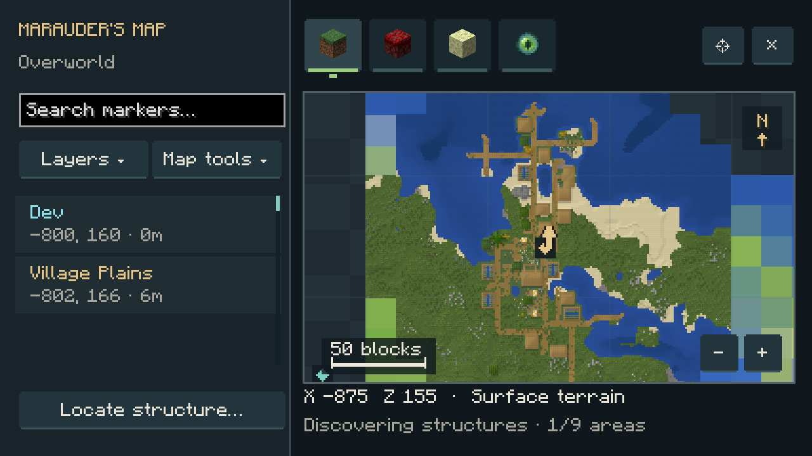
On this page
Open Map · Active, Press
Slot the learned skill in Tensura’s Skills → Unique menu and activate Open Map. Damage type: None. Cost / cooldown: None.
| Control | Action |
|---|---|
| Drag / mouse wheel | Pan / zoom at the cursor |
| Compass button / Home | Return to your location |
| Click a marker or sidebar entry | Open its relevant actions |
| Right-click empty map space | Open Add pin here… |
| Layers | Show or hide structures, pins and players |
| Map tools | Coordinate navigation, located result and map guide |
| Sidebar search / F | Filter marker names, types, players or coordinates |
| N | Create a pin at the map center |
North stays at the top. The scale bar shows distance; the footer shows cursor coordinates and survey progress. Nearby structures cluster with counts when zoomed out. Zoom in to separate them.
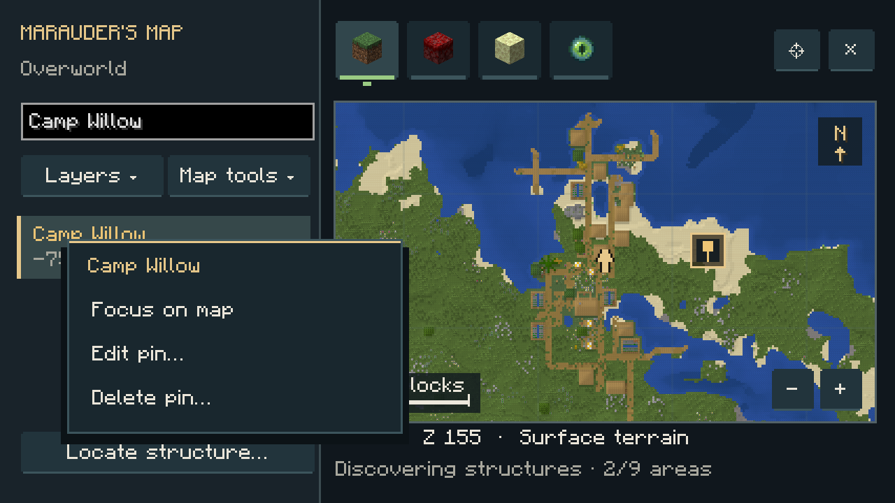
Dimension tabs
The grass block, crimson nylium and end stone tabs show the Overworld, Nether and End. Hover over a tab to see its name. The selected dimension has a colored underline.
The eye tab opens Other dimensions, a scrollable dropdown for addon dimensions. Type to filter it, then choose a dimension. Each dimension remembers its map position and zoom. Browsing never teleports your character.
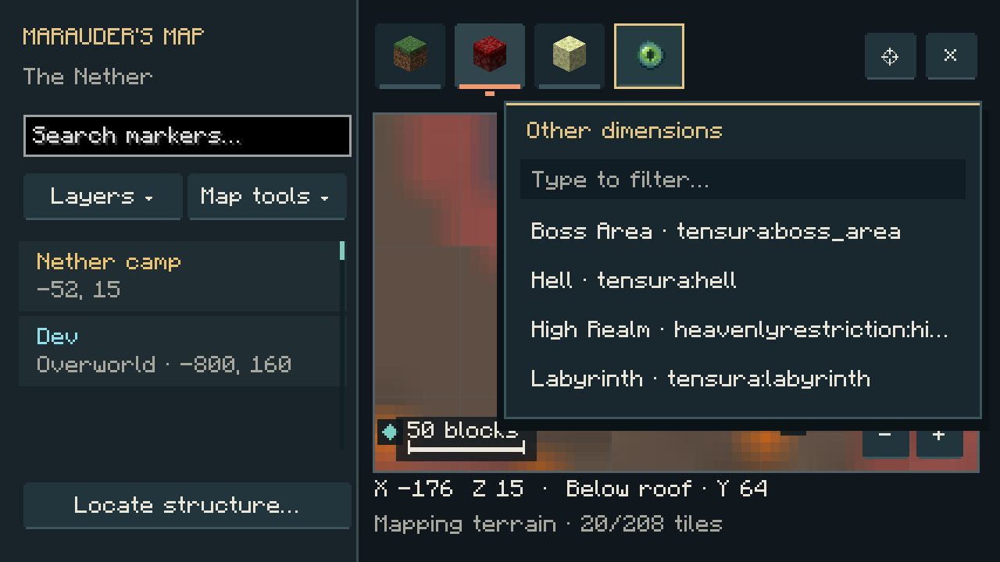
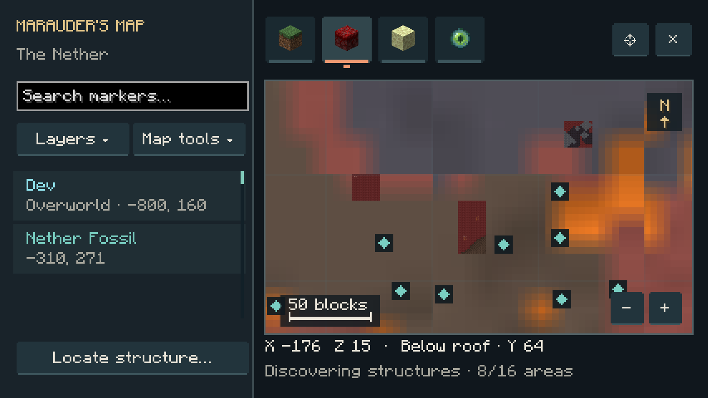
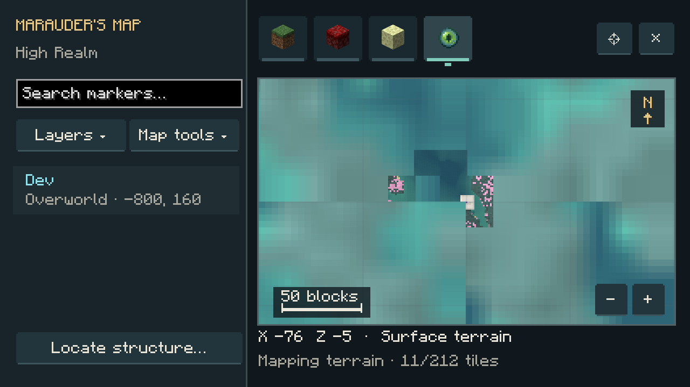
Terrain and shared exploration
Pan anywhere, including places nobody has visited. A crisp biome overview appears first, followed by terrain relief. Unexplored terrain is a world-generation preview; trees, builds and exact surfaces appear through recorded exploration or native detail when you zoom in. Recorded block pixels remain visible when zoomed out. Nether maps look below the roof. Reopening the map reuses recently viewed terrain.
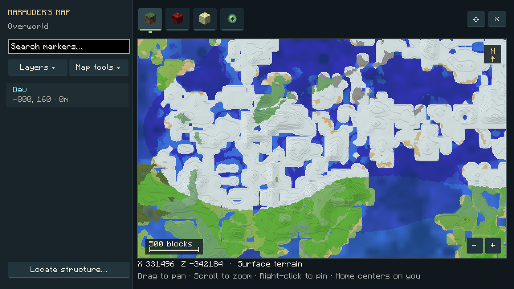
Exploration is shared between players on the same server. Actual terrain and builds around all online players are recorded, including players without this skill. Those recorded surfaces can be viewed by other players without visiting or loading the area on their client. Recording starts with this version and refreshes gradually as players explore. Existing local map caches still work. Custom pins remain private.
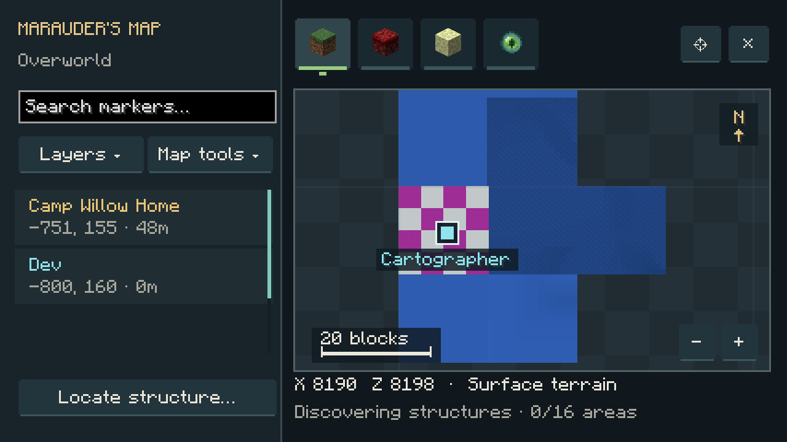
Structure markers and Locate
Enable Structures under Layers to show automatic vanilla and addon markers for the viewed area, at every zoom level and in unexplored regions. Panning or zooming starts discovery; Locate is not required. Markers appear as they are found, and overlapping views reuse completed discovery. The footer reports progress. Turning Structures off pauses discovery.
Locations follow native generation rules, variants, frequency and biome requirements. Saved structures take precedence. Discovered terrain corrects predictions and removes sites that do not exist; confirmed structures keep their markers. Unvisited sites say World-generation location in their tooltip; actual generation confirms the start. Automatic markers do not require generating terrain or spawning mobs. Use custom pins for player-built landmarks.
Locate structure… opens the full list of registered vanilla and addon structures. Choose Name A–Z for alphabetical order or Mod A–Z to group by mod, with alphabetical names inside each group. Each entry shows its mod; hover for the complete structure ID. The search bar narrows entries as you type by name, mod or ID. Scroll or drag the scrollbar to browse the list.
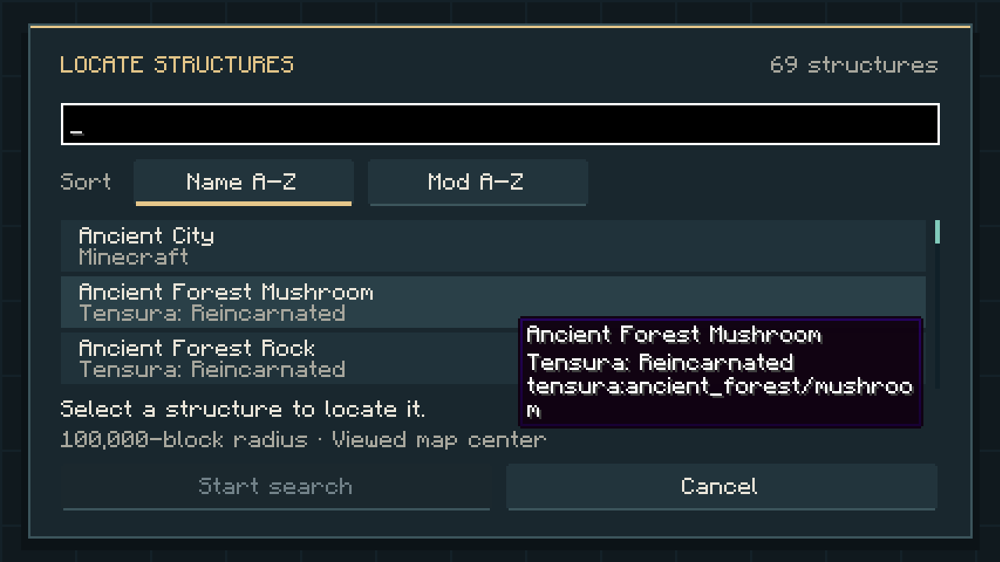
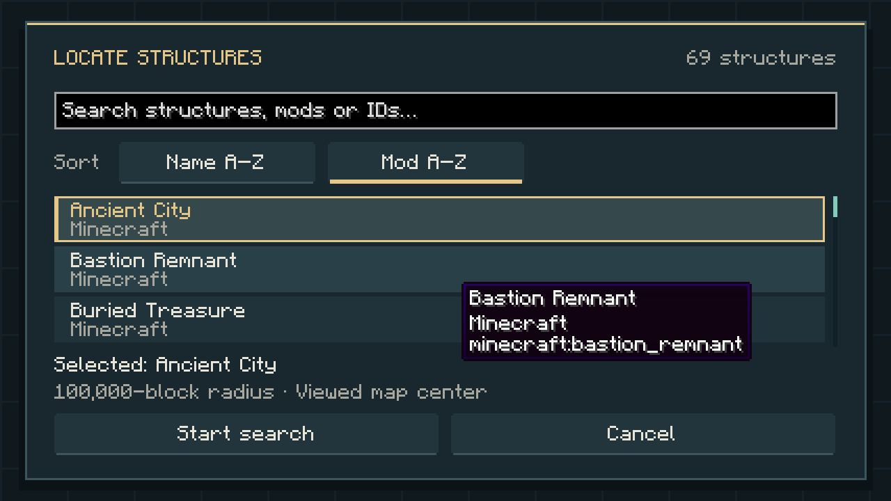
Select an entry and press Start search to search up to 100,000 blocks around the viewed map center. The search runs in the background and centers on a result automatically. Map tools → Show located structure returns to it later. Escape cancels a search. If nothing is found, pan to another area and try again.
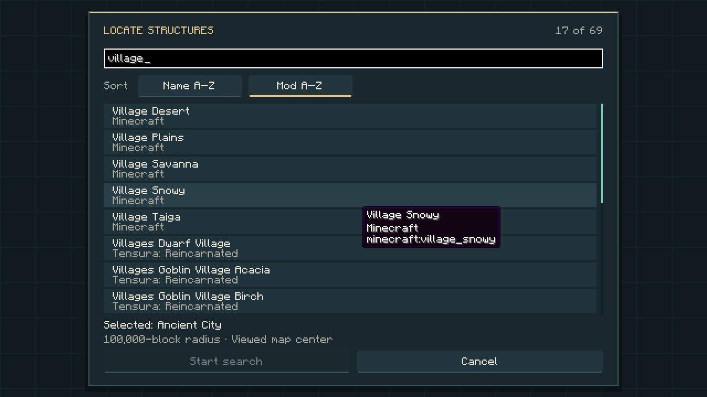
| Structure group | Color |
|---|---|
| Villages | Gold |
| Temples and pyramids | Orange |
| Fortresses, outposts and strongholds | Coral |
| Ocean structures | Blue |
| Ancient cities, trials and mineshafts | Violet |
| Other and addon structures | Teal |
Travel and player locations
Select a structure in your character’s current dimension and choose Travel… from its actions. Choose a learned, usable coordinate-teleport skill such as Spatial Motion, Spatial Manipulation or Instant Transmission.
The site is checked against its native structure start first. Missing sites are removed from the map and cannot open a teleport menu. Valid sites keep their icon, including structures that span several chunks.
The skill’s native menu opens with X, Y, Z and dimension prefilled for a safe surface arrival near the structure. Check the coordinates and confirm Warp. Underground structures use a surface approach. If no clear ground is available, choose another structure.
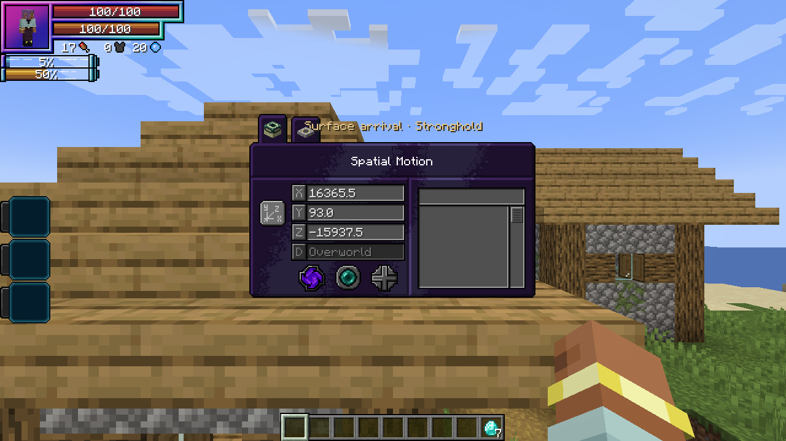
Preparing coordinates is free. Confirming Warp uses the skill’s normal resource cost, charge time, mastery, cooldown and restrictions. The atlas grants no teleport skill or cross-dimension travel; remote tabs are for viewing.
Players shows all online players, including those beyond render distance. Locations update twice per second. Your arrow is gold; other players have named cyan markers. Select a player and choose Focus on map to center their location and switch to their dimension if needed. Offline players disappear.
Custom pins
Right-click empty map space → Add pin here…, or press N for the map center. Give the pin a name and X/Y/Z coordinates, then choose from 8 colors and 6 icons: Pin, Home, Danger, Treasure, Portal or Camp.
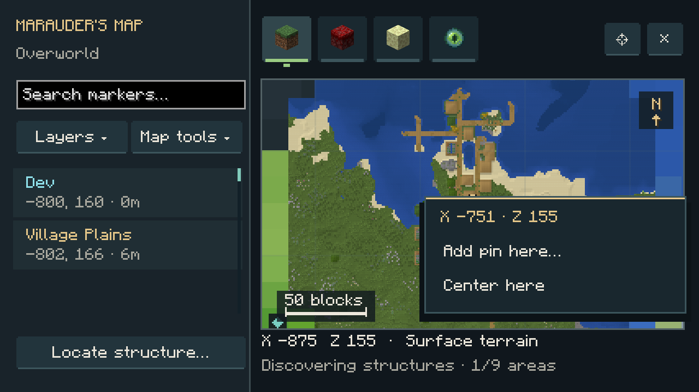
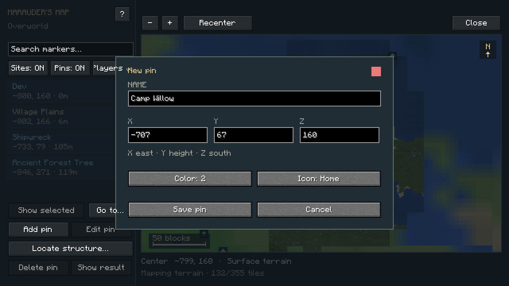
Select a pin to open Focus on map, Edit pin… or Delete pin…. Deletion requires confirmation. Up to 256 pins per player across dimensions are saved privately on the server and survive reconnects. Only the viewed dimension’s pins appear; other players cannot see or edit them.